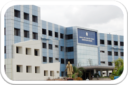

Jawaharlal Nehru Technological University, Hyderabad was established on 2nd October 1972 by the ACT of State Legislature of Andhra Pradesh No.16, as the first ever Technological University in the country. It has been in the forefront during the last forty-nine years (1972-2021) in providing quality technical education of relevance in the State and celebrating Golden Jubilee Year (2021-2022). In the year 1995 the University has been granted an Affiliating status by the state Government and since then JNT University has become one of the largest affiliating Universities in the state of Andhra Pradesh and in the Country and granting affiliations to private colleges offering Engineering, Pharmacy, MBA and MCA programmes in the Unified State of Andhra Pradesh.
After 37 years of relentless service to the society at large, JNT University, Hyderabad was restructured into 4 different Universities namely JNT University Hyderabad, JNT University Anantapur, JNT University Kakinada and JNAFAU, Hyderabad by the Government of Andhra Pradesh vide Government Order No. 13, dated 18 August 2008 and the Act of State Legislature No. 30, dated September 2008. Since then, the university was re-designated as Jawaharlal Nehru Technological University Hyderabad (JNTUH), Hyderabad. The jurisdiction of the University is entire Telangana districts of the unified state of Andhra Pradesh.
On 2nd June 2014, the new state of Telangana was formed by reorganizing the Unified state of Andhra Pradesh. Since then the JNTUH has been working as the State Affiliating University of Telangana State, with the Act. no.30 of 2008 of erstwhile State of Andhra Pradesh.
Affiliated colleges: JNT University Hyderabad accords affiliation to self-supporting colleges. The University offers B.Tech. in 26 branches; B.Pharmacy; M.Tech. in 48 specializations; M. Pharmacy in 9 specializations; MCA, MBA, Pharma.D and Pharma.D (PB) programs in affiliated colleges. JNTUH has 258 Affiliated Colleges. They include 171 Engineering Colleges, 74 Pharmacy Colleges and 13 stand-alone MCA/MBA colleges spread over 33 Districts of Telangana State. It has more than 3.00 Lakhs of students on rolls. Thus, JNTUH is a major University providing quality technical education in the State. The University is supporting in conducting Entrance Tests TS EAMCET-2021 & TS ECET-2021 entrusted by the Telangana State Council for Higher Education and recruitment tests for various government organizations like TSGENCO, TSTRANSCO, Police Recruitment Board, etc.
University Colleges and Academic Units: There are eight University Colleges and four academic units under the university, namely,  JNTUH University College of Engineering Science & Technology Hyderabad(UCEST) (1965) JNTUH University College of Management Hyderabad (1989) JNTUH University College of Engineering Jagtial, Jagtial dist. (2007) JNTUH University College of Engineering Manthani, Peddapalli dist. (2010) JNTUH University College of Engineering Rajanna Sircilla, Rajanna Sircilla dist. (2021) JNTUH University College of Pharmaceutical Sciences Sultanpur, Sangareddy dist. (2021) JNTUH University College of Engineering Wanaparthy (2022) School of Continuing and Distance Education (1983)
The University Engineering/Pharmacy Colleges and Academic Units of JNTUH are offering B.Tech. in 32 branches, B.Pharmacy, M.Tech. in 39 specializations, M.Pharmacy in 10 specializations, M.Sc. in 8 specializations, MBA and MCA, and Five-year Integrated Dual Degree Masters Program in 5 specializations with M.Tech. Additionally, MS and Ph.D. programs in various disciplines of Engineering, Technology, Science, Management and Humanities & Social Sciences are offered.